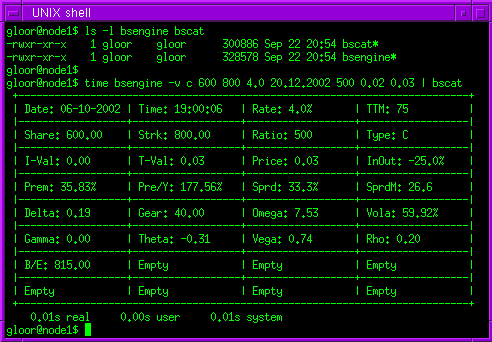

AbstractThe software was written and published in 2002, vibe code
modernized in 2026.
Bsengine calculates the fair value of European-style options based
on current stock prices. Additionally, it provides several key
computations, including Greeks, spread, break-even, Omega,
Gearing, and Rho. It utilizes the option pricing algorithm
developed by F. Black and M. Scholes, the architects of the
Black-Scholes model. The software was written in C on a SUN
workstation and was primarily designed to function as a
back-office processor. The code has been optimized for the Linux
operating system. While the author has successfully built the
software on Windows, this was done for testing purposes only and
is not recommended for production use due to known operating
system limitations.
Design Goals
The initial motivation for developing this software was a personal requirement for a system capable of receiving data from a stock exchange server to evaluate warrants based on a specific risk profile. A secondary design goal was to create a system independent of slow online banking websites often cluttered with advertisements. The third and most important reason was the discovery of inconsistent product information and miscalculations on various broker websites. Rather than relying on existing online banking systems, I prefer to invest based on my own calculations. Bsengine is designed for the industrial processing of batch data, such as automatically populating broker websites (similar to Swissquote or Consors). The bsengine kernel features a clean CLI interface and a modular, high-speed design. This concept allows the software to operate unattended as part of a larger batch processing workflow. Feel free to develop a Gtk+ frontend for the kernel if desired.
Post-processing Notes
Once the mathematical calculations based on the derivative pricing
model are complete, bsengine writes its results to stdout
(typically the computer screen). The standard output is a
token-separated data string, which can be easily parsed by
productional batch processing sub-processes. Using this feature,
the output can be loaded into a relational database management
system (RDBMS), such as a MySQL
database server, for further processing. I have also
developed an additional application called bscat (bsengine
catalog), which reads bsengine's output via a Unix pipe and
formats it into the human-readable layout shown in the screenshot
above.
Technical Notes
The bsengine kernel and bscat are written entirely in C and are
easily portable to other Unix environments or operating systems
that support pipes. The software was developed on a SUN Sparc 5
running GNU/Linux. To calculate implied volatility, a fast
approximation formula was necessary. I utilized the
"Newton-Raphson" algorithm to numerically determine volatility
using the generalized Black-Scholes model. The "Manaster and
Koehler" algorithm handles the initial values for iterations,
which is the primary reason bsengine is extremely fast at
computing option prices. Bsengine has undergone extensive testing
using real-time data from trading systems. This software is ready
for production use; however, please note that the bsengine package
is published under the GNU
General Public License, which means it is provided without
any warranty.
Future Plans and Additional Features
No software is ever truly finished; this version of bsengine is a
snapshot of my current development source tree (Work in Progress).
I plan to expand its capabilities once I secure access to a
favorable or free stock exchange interface. Finding an adequate
data provider is a challenge, which is the main reason further
development is currently on hold. As option pricing requires
real-time data, current development focused on speed and
reliability. If you have suggestions, comments, or contributions,
please feel free to contact me via email.
Examples of bsengine and bscat in Action
gloor@node1$ ./bsengine -h
bsengine 1.0.0 - Black/Scholes Option pricing (UNIX)
written by Marc Gloor
<marc_dot_gloor_at_u_dot_nus_dot_edu>
usage : bsengine [options] [arguments]
example: bsengine -v c 6024.2 8000 4.0 20.10.2002 500
0.02
0.03
options are:
-h show
help
-v
compute implied volatility
-r show
release
-p
compute fair price
-v arguments (in
order):
-p
arguments (in order):
-1st Call/Put flag
[c/p]
-1st
Call/Put flag [c/p]
-2nd Underlying price
[dec]
-2nd Underlying price [dec]
-3rd Strike price
[dec]
-3rd
Strike price [dec]
-4th Interest Rate %
[dec]
-4th
Interest Rate % [dec]
-5th Maturity
[dd.mm.yyyy]
-5th Maturity [dd.mm.yyyy]
-6th Options ratio
[dec]
-6th
Options ratio [dec]
-7th Bid price
[dec]
-7th
Volatility % [dec]
-8th Ask price [dec]
In production environments, you can populate a relational
database using the following command:
gloor@node1$ ./bsengine -v c 6024.2 8000 4.0 20.10.2002 500
0.02
0.02
Example of the semicolon-separated data output:
22-09-2002;20:08:12;C;6024.20;8000.00;500;28;4.0%;0.03;55.63%;-24.7%;...
Example of bsengine and bscat working together (e.g., for a CGI script):
gloor@node1$ bsengine -v c 6024.2 8000 4.0 20.10.2002 500
0.02
0.03 | bscat
+---------------------------------------------------------------------------+
| Date: 22-09-2002 | Time: 20:09:08 | Rate:
4.0% | TTM:
28 |
|------------------+------------------+------------------+------------------|
| Share: 6024.20 | Strk:
8000.00 | Ratio:
500 | Type:
C |
|------------------+------------------+------------------+------------------|
| I-Val: 0.00 | T-Val:
0.03 | Price:
0.03 | InOut:
-24.7% |
|------------------+------------------+------------------+------------------|
| Prem: 33.05% | Pre/Y:
1179.91% | Sprd: 33.3% |
SprdM:
119.8 |
|------------------+------------------+------------------+------------------|
| Delta: 0.04 | Gear:
401.61 | Omega:
16.77 |
Vola: 55.63% |
|------------------+------------------+------------------+------------------|
| Gamma: 0.00 | Theta:
-1.52 | Vega:
1.50 | Rho:
0.18 |
|------------------+------------------+------------------+------------------|
| B/E: 8015.00 |
Empty
|
Empty
|
Empty
|
|------------------+------------------+------------------+------------------|
|
Empty
|
Empty
|
Empty
|
Empty
|
+---------------------------------------------------------------------------+
Data Field Descriptions
Date: Timestamp
date
Pre/Y: Premium per annum
Time: Timestamp
time
Sprd: Spread
Rate: Interest
rate
SprdM: Spread Move
TTM: Time to
maturity
Delta: Delta
Share: Share
price
Gear:
Gearing
Strk: Strike
price
Omega: Omega
Ratio: Options
ratio
Vola: Implied volatility
Type: Type
(Call/Put)
Gamma: Gamma
I-Val: Intrinsic
value
Theta: Theta
T-Val: Time
value
Vega:
Vega
Price: Fair option
price Rho:
Rho
InOut: Moneyness
(In/Out)
B/E: Break-even
Prem: Premium
Benchmarks
In computational simulations, the pricing of 20,000 options was
completed in seconds. Performance may vary depending on hardware
specifications and current system workload. The binary has been
optimized for Linux (stripped code).
License
This distribution is licensed under the GNU General Public
License.
Download the Latest Release
bsengine-1.1.0-src.tar.gz
[.tar.gz, 83kb]
bsengine-1.1.0-statbin.tar.gz
[.tar.gz, 580kb]
If you require further assistance, please let me know.
$Id: bsengine.html,v 1.23 2026/04/26 09:26:08 gloor Exp gloor $ |